Revisa la Bibliografía recomendada en la sección Fuentes de Información del curso.
Notas para la clase.
Propiedades de una sustancia pura
Ahora dirigimos nuestra atención al concepto de sustancias puras y la presentación de sus propiedades.
Sistema simple
Un sistema simple es aquel en el que están ausentes los efectos del movimiento, la viscosidad, el corte del fluido, la capilaridad, la tensión anisotrópica y los campos de fuerza externos.
Substancia homogénea
Se dice que una sustancia que tiene propiedades termodinámicas uniformes es homogénea.
Substancia pura
Una sustancia pura tiene una composición química homogénea e invariable y puede existir en más de una fase.
Ejemplos:Postulado de estado
Una vez más, el postulado de estado para una sustancia pura y simple establece que el estado de equilibrio se puede determinar especificando dos propiedades intensivas independientes cualesquiera.
La superficie $p-v-T$ para una sustancia real
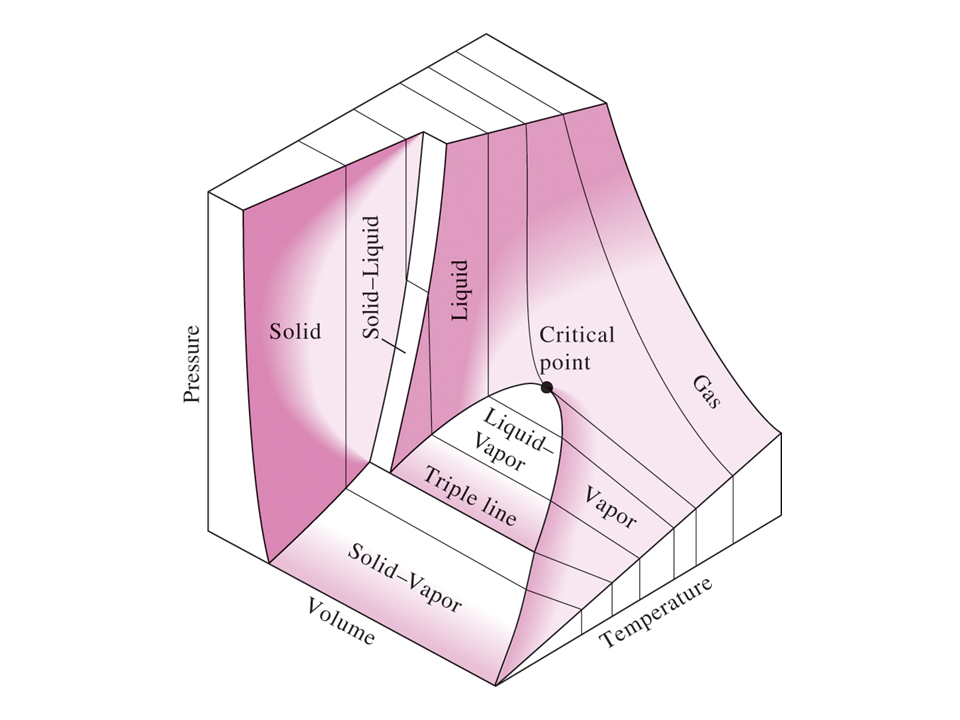
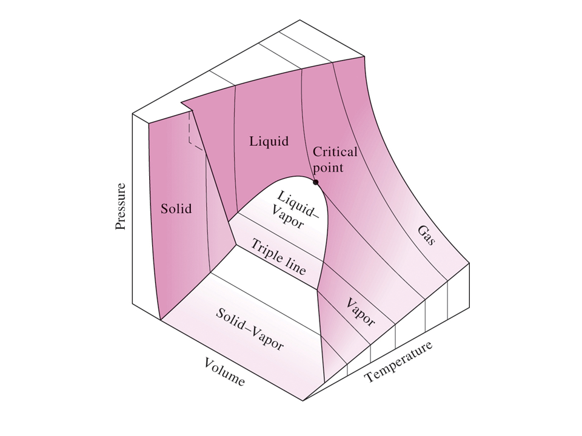
Las sustancias reales que cambian fácilmente de fase de sólido a líquido a gas, como el agua, el refrigerante 134a y el amoníaco, no pueden tratarse como gases ideales en general. La relación de presión, volumen, temperatura o ecuación de estado para estas sustancias es generalmente muy complicada, y las propiedades termodinámicas se dan en forma de tabla. Las propiedades de estas sustancias pueden ilustrarse mediante la relación funcional $F(p,v,T)=0$, denominada ecuación de estado. Las dos figuras anteriores ilustran la función de una sustancia que se contrae al congelarse y una sustancia que se expande al congelarse, respectivamente.
Consideremos los resultados de calentar agua líquida desde $20^\circ\text{C}$, $1 \text{ atm}$ manteniendo la presión constante. Seguiremos el proceso de presión constante. En primer lugar, el agua líquida está contenida en un dispositivo de pistón-cilindro donde se coloca un peso fijo sobre el pistón para mantener constante la presión del agua en todo momento. A medida que el agua líquida se calienta mientras la presión se mantiene constante, ocurren los siguientes eventos.Proceso 1-2:
La temperatura y el volumen específico aumentarán desde el estado $1$ de líquido comprimido o líquido subenfriado hasta el estado $2$ de líquido saturado. En la región de líquido comprimido, las propiedades del líquido son aproximadamente iguales a las propiedades del estado líquido saturado a esa temperatura.
Proceso 2-3:
En el estado $2$, el líquido ha alcanzado la temperatura a la que comienza a hervir, llamada temperatura de saturación, y se dice que existe como líquido saturado. Las propiedades en el estado líquido saturado se indican mediante el subíndice $f$ y $v_2 = v_f$. Durante el cambio de fase, tanto la temperatura como la presión permanecen constantes (el agua hierve a $100^\circ\text{C}$ cuando la presión es de $1 \text{ atm}$ o $101,325 \text{ kPa}$). En el estado $3$, las fases de líquido y vapor están en equilibrio y cualquier punto en la línea entre los estados $2$ y $3$ tiene la misma temperatura y presión.


Proceso 3-4:
En el estado $4$ existe un vapor saturado y se completa la vaporización. El subíndice $g$ siempre indicará un estado de vapor saturado. Nótese que $v_4 = v_g$.

Las propiedades termodinámicas en estado líquido saturado y estado de vapor saturado se dan en la Tabla A-4 como tabla de temperatura saturada y en la Tabla A-5 como tabla de presión saturada. Estas tablas contienen la misma información. En la Tabla A-4, la temperatura de saturación es la propiedad independiente y en la Tabla A-5, la presión de saturación es la propiedad independiente. La presión de saturación es la presión a la cual ocurrirá el cambio de fase a una temperatura dada. En la región de saturación la temperatura y la presión son propiedades dependientes; si uno es conocido, entonces el otro es automáticamente conocido.
Proceso 4-5:
Si continúa el calentamiento a presión constante, la temperatura comenzará a aumentar por encima de la temperatura de saturación, $100^\circ\text{C}$ en este ejemplo, y el volumen también aumentará. El estado $5$ se llama estado sobrecalentado porque $T_5$ es mayor que la temperatura de saturación para la presión y el vapor no está a punto de condensarse. Las propiedades termodinámicas del agua en la región sobrecalentada se encuentran en las tablas de vapor sobrecalentado, Tabla A-6.

Este proceso de calentamiento a presión constante se ilustra en la siguiente figura.

Considere repetir este proceso para otras líneas de presión constante como se muestra a continuación.
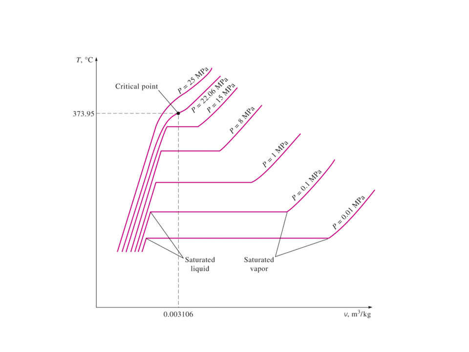
Si todos los estados de líquido saturado están conectados, se establece la línea de líquido saturado. Si todos los estados de vapor saturado están conectados, se establece la línea de vapor saturado. Estas dos líneas se cruzan en el punto crítico y forman lo que a menudo se llama la cúpula de vapor. A la región entre la línea saturada y la línea de vapor saturado se le puede decir como: región de mezcla de vapor-líquido saturado, región húmeda (es decir, una mezcla de líquido saturado y vapor saturado), región de dos fases o sólo la región de saturación. Tenga en cuenta que la tendencia de la temperatura siguiendo una línea de presión constante es aumentar con el aumento del volumen y la tendencia de la presión siguiendo una línea de temperatura constante es disminuir con el aumento del volumen.
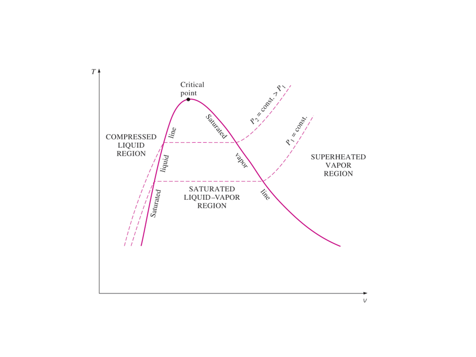
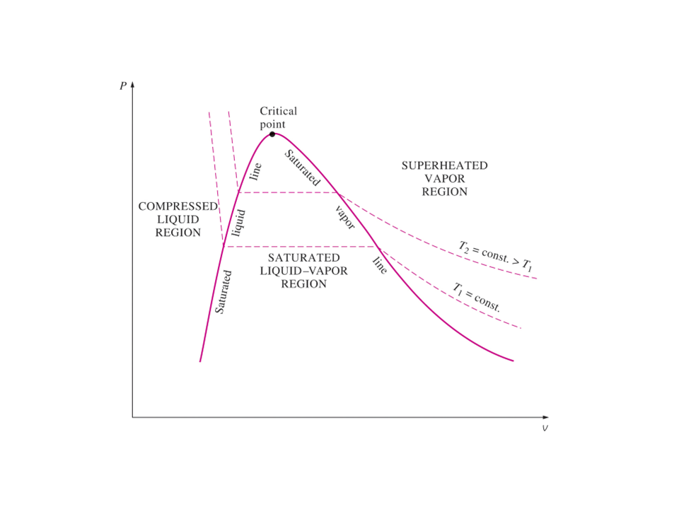
La región a la izquierda de la línea de líquido saturado y por debajo de la temperatura crítica se denomina región de líquido comprimido o líquido subenfriado. La región a la derecha de la línea de vapor saturado y por encima de la temperatura crítica se denomina región de vapor sobrecalentado. Consulte la Tabla A-1 para conocer los datos de puntos críticos para diferentes sustancias seleccionadas. A temperaturas y presiones por encima del punto crítico, la transición de fase de líquido a vapor ya no es discreta.
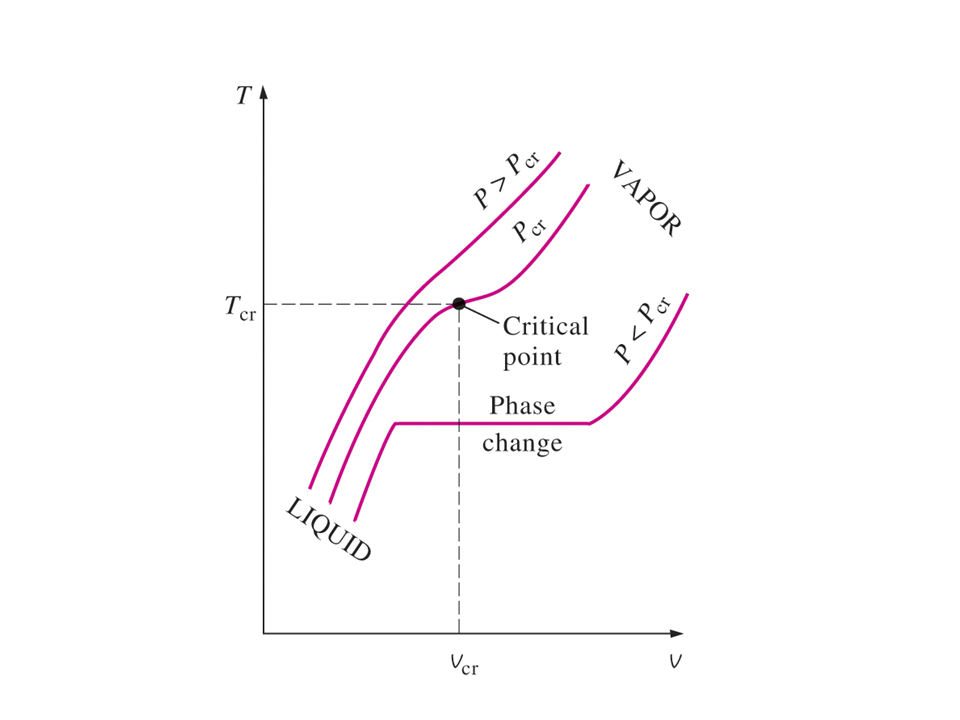
La siguiente figura muestra el diagrama $p-T$, a menudo llamado diagrama de fase, para sustancias puras que se contraen y expanden al congelarse. El punto triple del agua es $0.01^\circ \text{C}$, $0.6113 \text{ kPa}$.
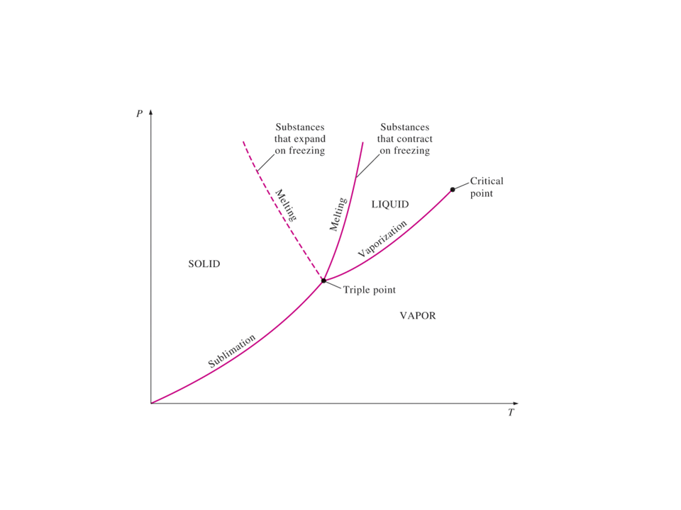
Tablas de propiedades
Además de los datos de temperatura, presión y volumen, las tablas A-4 a A-8 contienen los datos para la energía interna específica, $u$, la entalpía específica, $h$, y la entropía específica, $s$. La entalpía es una agrupación conveniente de la energía interna, la presión y el volumen y está dada por
$$ H = U + pV $$La entalpía por unidad de masa es
$$ h = u + pv $$Encontraremos que la entalpía específica, $h$, es bastante útil para calcular la energía de las corrientes de masa que fluyen dentro y fuera de los volúmenes de control. La entalpía también es útil en el balance de energía durante un proceso a presión constante para una sustancia contenida en un dispositivo de pistón-cilindro cerrado. La entalpía tiene unidades de energía por unidad de masa, $\displaystyle{\frac{\text{kJ}}{\text{kg}}}$. La entropía específica, $s$, es una propiedad definida por la segunda ley de la termodinámica y está relacionada con la transferencia de calor a un sistema dividida por la temperatura del sistema; así, la entropía tiene unidades de energía divididas por temperatura. El concepto de entropía se explica en los Capítulos dedicados a ello de los libros de texto recomendados.
Tablas de agua saturada
Dado que la temperatura y la presión son propiedades dependientes del cambio de fase, se proporcionan dos tablas para la región de saturación. La tabla A-4 tiene la temperatura como propiedad independiente. La tabla A-5 tiene la presión como propiedad independiente. Estas dos tablas contienen la misma información y, a menudo, sólo se proporciona una tabla.
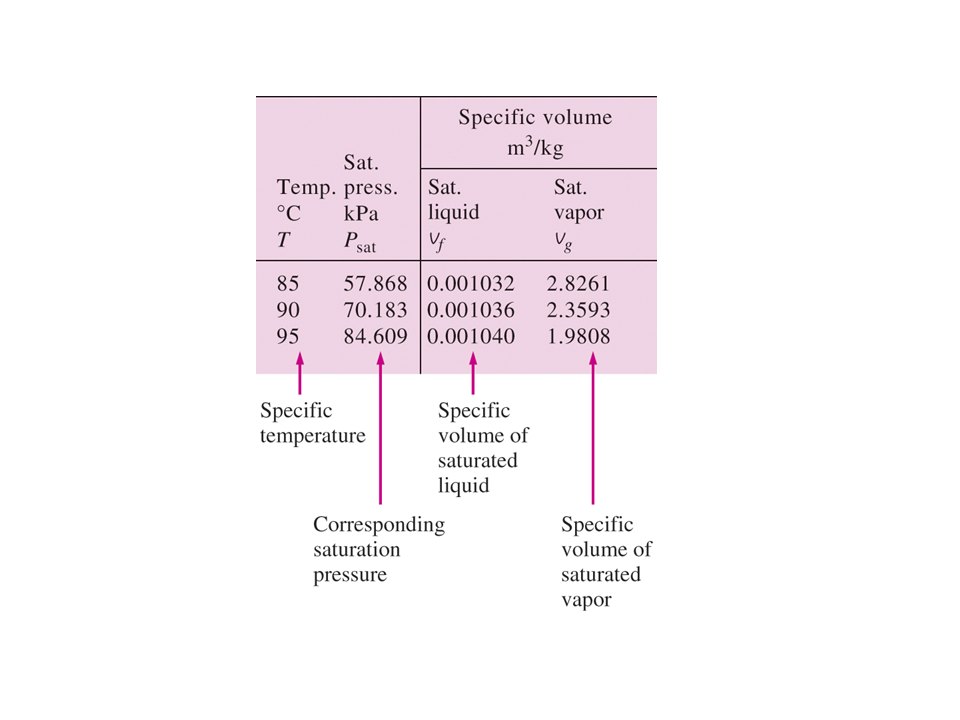
La presión de saturación es la presión a la que las fases líquida y de vapor están en equilibrio a una temperatura determinada.
La temperatura de saturación es la temperatura a la cual las fases líquida y de vapor están en equilibrio a una presión dada.
El subíndice $fg$ utilizado en las Tablas A-4 y A-5 se refiere a la diferencia entre el valor de vapor saturado y el valor de líquido saturado. Es decir
$$ u_{fg} = u_g - u_f $$ $$ h_{fg} = h_g - h_f $$ $$ s_{fg} = s_g - s_f $$La cantidad $h_{fg}$ se llama entalpía de vaporización (o calor latente de vaporización). Representa la cantidad de energía necesaria para vaporizar una unidad de masa de líquido saturado a una temperatura o presión determinada. Disminuye a medida que aumenta la temperatura o la presión, y se vuelve cero en el punto crítico.
Calidad y mezcla de vapor líquido saturado
Ahora, repasemos el proceso de adición de calor a presión constante para el agua. Dado que el estado $3$ es una mezcla de líquido saturado y vapor saturado, ¿cómo lo ubicamos en el diagrama $T-v$? Para establecer la ubicación del estado $3$ se define un nuevo parámetro llamado calidad, $x$. La calidad se define como
$$ x = \frac{\text{masa}_{\text{vapor saturado}}}{\text{masa}_\text{Total}} = \frac{m_g}{m_f + m_g} $$La calidad es cero para el líquido saturado y uno para el vapor saturado ($ 0 \leq x \leq 1 $). El volumen específico medio en cualquier estado $3$ se da en términos de calidad como sigue. Considere una mezcla de líquido saturado y vapor saturado. El líquido tiene una masa $m_f$ y ocupa un volumen $V_f$ . El vapor tiene una masa $m_g$ y ocupa un volumen $V_g$.
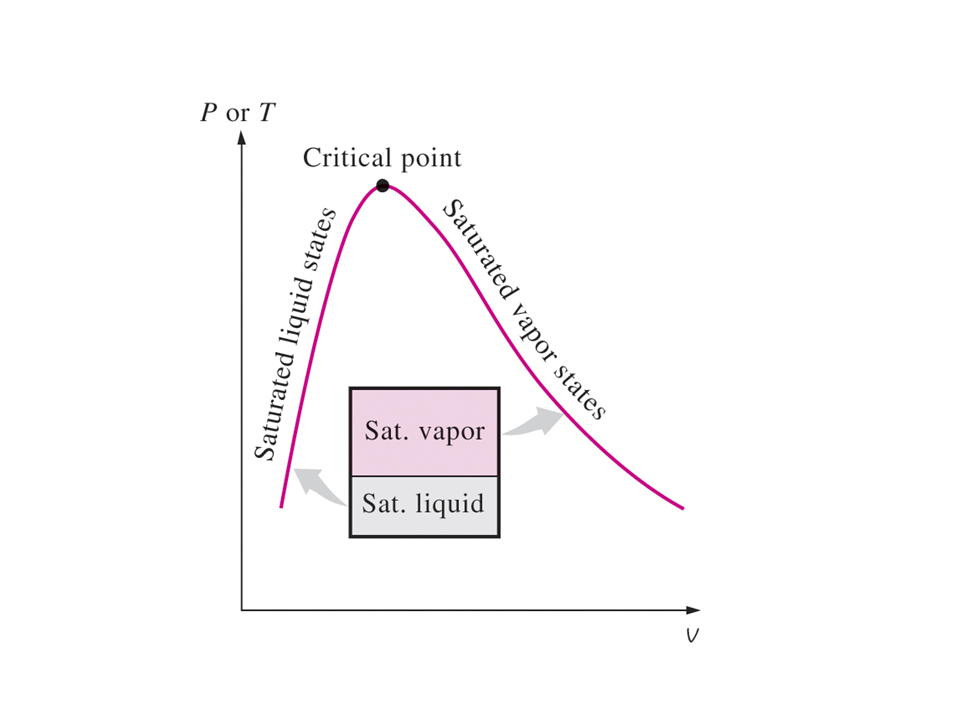
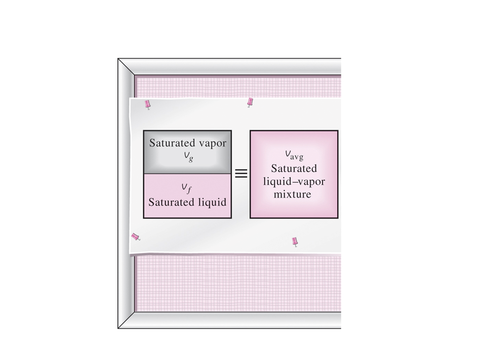
Podemos deducir que
$$ V = V_f + V_g $$ $$ m = m_f + m_g $$ $$ V = m v \, , \qquad V_f = m_f v_f \, , \qquad V_g = m_g v_g $$ $$ m v = m_f v_f + m_g v_g $$ $$ v = \frac{m_f v_f}{m} + \frac{m_g v_g}{m} $$Recordando la definición de la calidad, $x$,
$$ x = \frac{m_g}{m} = \frac{m_g}{m_f + m_g} $$Después,
$$ \frac{m_f}{m} = \frac{m - m_g}{m} = 1 - x $$Tenga en cuenta que la cantidad $1 - x$ a menudo recibe el nombre de humedad. El volumen específico de la mezcla saturada se convierte en
$$ v = (1 - x) v_f + x v_g $$La forma que usaremos con mayor frecuencia es
$$ v = v_f + x (v_g - v_f) $$Se observa que el valor de cualquier propiedad extensiva por unidad de masa en la región de saturación se calcula a partir de una ecuación que tiene una forma similar a la de la ecuación anterior. Sea $Y$ cualquier propiedad extensiva y sea $y = \displaystyle{\frac{Y}{m}}Y/m$ la propiedad intensiva correspondiente; entonces
$$ y = y_f + x (y_g - y_f) $$ $$ y = y_f + x y_{fg} $$El término $y_{fg}$ es la diferencia entre los valores de vapor saturado y líquido saturado de la propiedad $y$; y puede ser reemplazada por cualquiera de las variables $v$, $u$, $h$ o $s$. A menudo usamos la ecuación anterior para determinar la calidad, $x$, de un estado de vapor líquido saturado,
$$ y = \frac{y - y_f}{y_{fg}} $$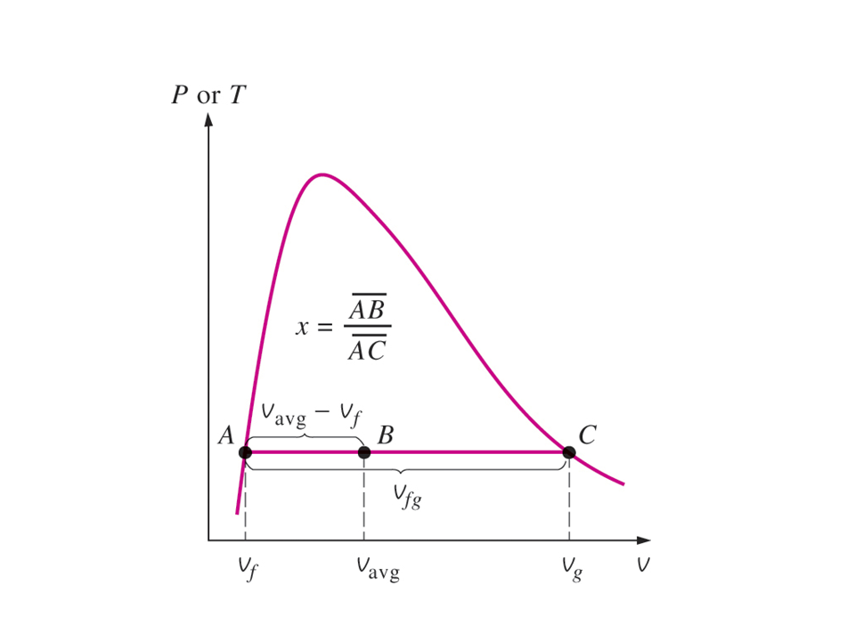
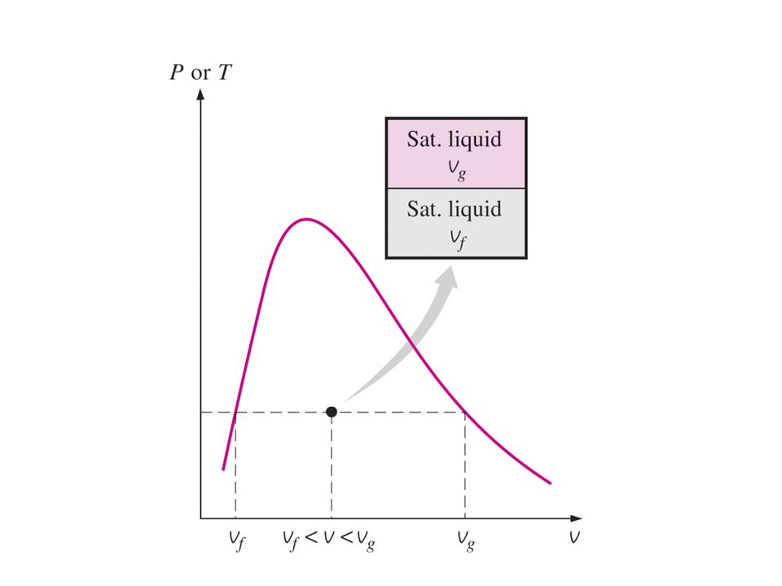
Tablas de vapor sobrecalentado
Se dice que una sustancia está sobrecalentada si la temperatura dada es mayor que la temperatura de saturación para la presión dada. En el agua sobrecalentada (Tabla A-6), $T$ y $p$ son las propiedades independientes. El valor de la temperatura a la derecha de la presión es la temperatura de saturación del agua a esa presión. La primera entrada en la tabla es el estado de vapor saturado (Sat.) a la presión de referencia para esa sección de la tabla.
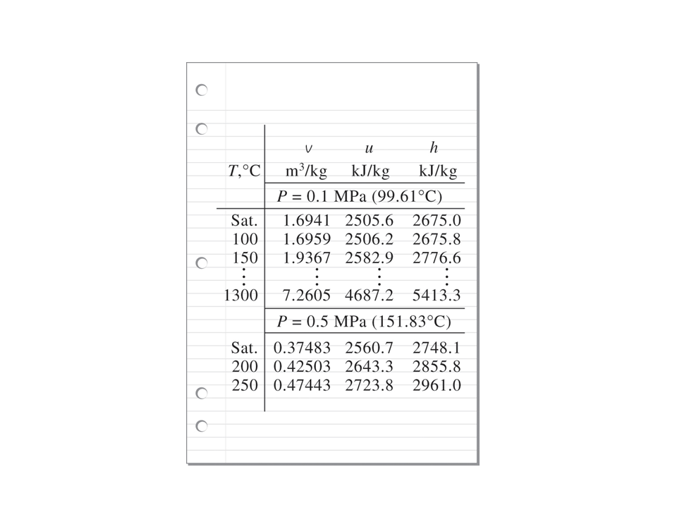
Tabla de agua líquida comprimida
Se dice que una sustancia es un líquido comprimido cuando su presión es mayor que la presión de saturación para la temperatura especificada.
Los datos para los estados de líquido comprimido del agua se encuentran en la Tabla A-7. La tabla A-7 está organizada como la Tabla A-6, excepto que los estados de saturación son estados de líquido saturado. Tenga en cuenta que los datos de la Tabla A-7 comienzan en $5 \text{ MPa}$ o $50$ veces la presión atmosférica. A presiones por debajo de $5 \text{ MPa}$ para el agua, los datos son aproximadamente iguales a los datos del líquido saturado a la temperatura dada. Aproximamos los datos de $v$, $u$, $h$ y $s$ como
$$ y \cong y_{f@T} $$La entalpía es más sensible a las variaciones de presión; por lo tanto, a altas presiones la entalpía se puede aproximar por
$$ h \cong h_{f@T} + v_f (p - p_{\text{sat}}) $$Tabla de vapor de agua-hielo saturado
Cuando la temperatura de una sustancia está por debajo de la temperatura del punto triple, las fases sólida y líquida saturada coexisten en equilibrio. Aquí definimos la calidad como la relación de la masa que es vapor a la masa total de sólido y vapor en la mezcla saturada de sólido-vapor. El proceso de cambiar directamente de la fase sólida a la fase de vapor se llama sublimación. Los datos para hielo saturado y vapor de agua se dan en la Tabla A-8. En la Tabla A-8, el término Subl (ig) se refiere a la diferencia entre el valor de vapor saturado y el valor de sólido saturado.
El volumen específico, la energía interna, la entalpía y la entropía de una mezcla de hielo saturado y vapor saturado se calculan de manera similar a las mezclas de líquido y vapor saturados.
$$ y_{ig} = y_g - y_i $$ $$y = y_i + x y_{ig} $$donde la calidad, $x$, de un estado de vapor de hielo saturado es
$$ x = \frac{m_g}{m_i + m_g} $$Cómo elegir la tabla correcta
La tabla correcta para encontrar las propiedades termodinámicas de una sustancia real siempre se puede determinar comparando las propiedades del estado conocido con las propiedades en la región de saturación. Dada la temperatura o la presión y otra propiedad del grupo $v$, $u$, $h$ y $s$, se utiliza el siguiente procedimiento. Por ejemplo, si se especifican la presión y el volumen específico, se hacen tres preguntas: Para la presión dada,
$$ \text{es } v \lt v_f \text{ ?} $$ $$ \text{es } v_f \lt v \lt v_g \text{ ?} $$ $$ \text{es } v_g \gt v \text{ ?} $$La respuesta a una de estas preguntas debe ser sí. Si la respuesta a la primera pregunta es afirmativa, el estado se encuentra en la región de líquido comprimido y las tablas de líquido comprimido se utilizan para encontrar las propiedades del estado. Si la respuesta a la segunda pregunta es afirmativa, el estado se encuentra en la región de saturación y se utiliza la tabla de temperatura de saturación o la tabla de presión de saturación para encontrar las propiedades. Luego se calcula la calidad y se usa para calcular las otras propiedades, $u$, $h$ y $s$. Si la respuesta a la tercera pregunta es afirmativa, el estado se encuentra en la región de sobrecalentamiento y las tablas de sobrecalentamiento se utilizan para encontrar las otras propiedades.
Algunas tablas no siempre pueden dar la energía interna. Cuando no está en la lista, la energía interna se calcula a partir de la definición de la entalpía como
$$ u = h - pv $$